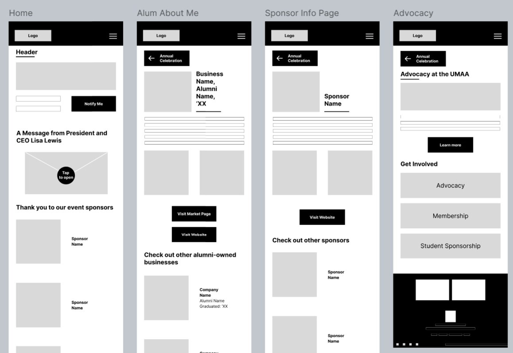
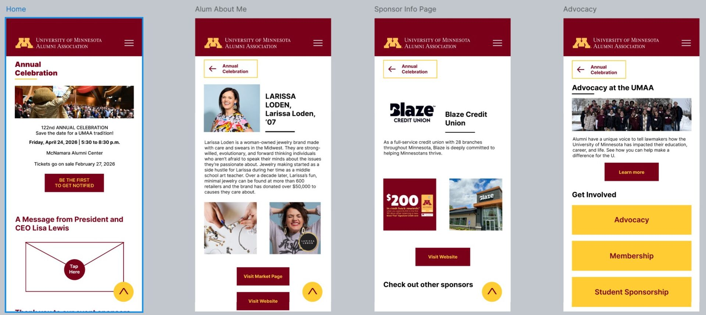

UMAA Wireframing
Stakeholder-Driven Responsive Wireframes
.png)
Project Overview
This project was created for the University of Minnesota's Alumni Association (UMAA) to help transition information traditionally distributed through printed celebration booklets into digital webpages.
The goal was to reduce physical waste by redesigning the annual alumni celebration booklet into an accessible online format while preserving the informational and ceremonial value of the content.
My role included UX research synthesis, user flow mapping, low-fidelity wireframing, and high-fidelity prototype layout design.
Constraints
- Maintain alignment with existing alumni association branding and typography systems.
- Complete design within an in-class rapid iteration cycle.
- Structure content so it could realistically be implemented using standard web development frameworks.
- Support multiple linked informational pages rather than a single long-scroll experience.
Wireframes & Design Process
I began by mapping user flows in Adobe Illustrator to understand navigation relationships before designing page layouts.
Process Stages
- User Flow Mapping (Illustrator): Defined entry points and navigation hierarchy.
- Low-Fidelity Wireframes (Canva): Focused on information grouping rather than visual polish.
- High-Fidelity Prototype: Refined typography, spacing, and responsive layout behavior.



Navigation Decisions
- Top navigation prioritized quick access to event and alumni content.
- Content was organized by category rather than booklet sequence.
- Pages were designed to function as independent but connected informational modules.
Responsive Considerations
- Desktop layouts used multi-column content distribution.
- Mobile layouts stacked content vertically for scrolling efficiency.
- Interactive elements were sized for touch usability.
Before / After Thinking
What Improved
- Reduced physical waste by converting booklet information into a reusable digital format.
- Improved accessibility by allowing event information to be viewed online.
- Enabled modular navigation rather than linear booklet scanning.
- Allowed users to jump directly to sections of interest.
Clarity Added
- Separated sponsorship recognition from general event information.
- Improved visual hierarchy for alumni highlights and initiatives.
- Structured content for potential future scalability.
Reflection
Working with stakeholder-driven design requirements was different from purely academic projects because the primary constraint was preserving institutional messaging while improving usability.
I learned how to balance organizational communication goals with UX best practices, especially when translating print materials into digital interfaces.
This project strengthened my understanding of designing within brand systems, stakeholder expectations, and real-world content constraints.